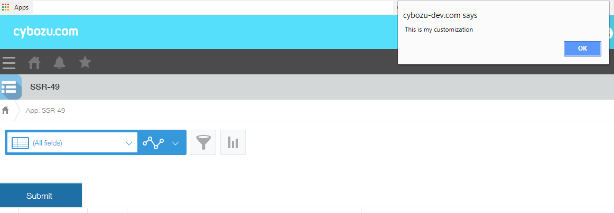

QuickStart React
Requirement
ESM usage with JSX
Step 1: Run commands
$ npm install -g create-react-app
$ create-react-app my-customization
$ cd my-customization
$ npm install cross-env babel-preset-stage-0 css-loader style-loader webpack-cli webpack babel-loader
$ npm install uglifyjs-webpack-plugin --save-dev
$ npm install @kintone/kintone-ui-component
$ rm -f src/*
Step 2: Add index.jsx file to src/ folder:
import React, { Component } from 'react';
import ReactDOM from 'react-dom';
import {Button} from '@kintone/kintone-ui-component';
class MyCustomization extends Component {
constructor(props) {
super(props);
}
render() {
return (
<Button text='Submit' type='submit' onClick={function() {alert('This is my customization');}}/>
);
}
}
// Adding your customization into header space of kintone app
kintone.events.on("app.record.index.show", function(ev) {
var kintoneSpaceElement = kintone.app.getHeaderSpaceElement();
ReactDOM.render(<MyCustomization />, kintoneSpaceElement);
});
Step 3: Add webpack.config.js file to my-customization/ folder
const path = require('path');
const UglifyJsPlugin = require('uglifyjs-webpack-plugin');
module.exports = (env = {}) => {
return {
entry: {
"my-customization.min": './src/index.jsx'
},
output: {
path: path.resolve(__dirname, 'dist'),
filename: '[name].js',
},
module: {
rules: [
{
test: /\.jsx$/,
exclude: /(node_modules|bower_components)/,
use: {
loader: 'babel-loader',
options: {
presets: ['react-app','@babel/preset-env'],
plugins: ["transform-class-properties"]
}
}
},
{
test: /\.css$/,
use: [
{ loader: "style-loader" },
{ loader: "css-loader" }
]
}
]
},
watch: env.watch,
optimization: {
minimizer: [
new UglifyJsPlugin({
include: /\.min\.js$/,
})
]
}
}
}
Step 4: Add a script to buiding by webpack to package.json
"scripts": {
"build-webpack": "cross-env NODE_ENV=production webpack",
...
}
- Run command to build the customization file
$ npm run build-webpack
result:
* ./dist/my-customization.min.js
- Attach my-customization.min.js into kintone app setting

UMD usage without JSX
- Attach 'react' and 'react-dom' UMD scripts into kintone app
https://unpkg.com/react@16/umd/react.production.min.js
https://unpkg.com/react-dom@16/umd/react-dom.production.min.js
./dist/react/kintone-ui-component.min.js
./dist/react/kintone-ui-component.min.css
- Create index.js file
(function () {
kintone.events.on("app.record.index.show", function (ev) {
var kintoneSpaceElement = kintone.app.getHeaderSpaceElement();
ReactDOM.render(
React.createElement(kintoneUIComponent.Button, {text: 'Submit', type: 'submit', onClick: function(){
alert('This is my customization');
}}),
kintoneSpaceElement
);
});
})();
- Attach index.js file into kintone app setting